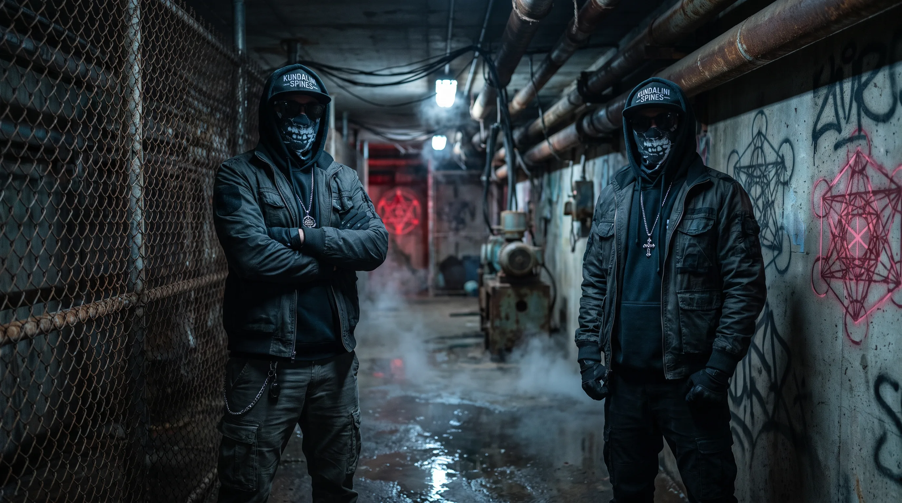
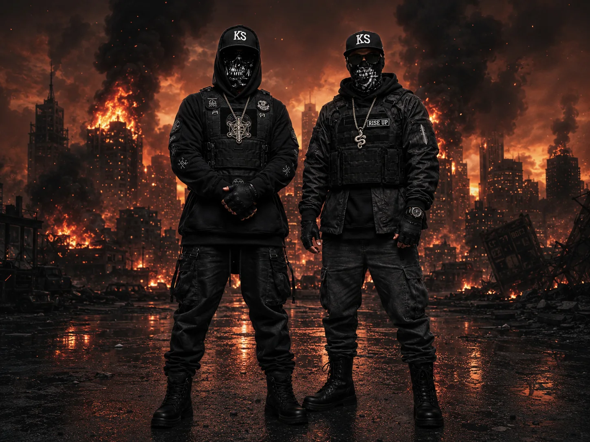
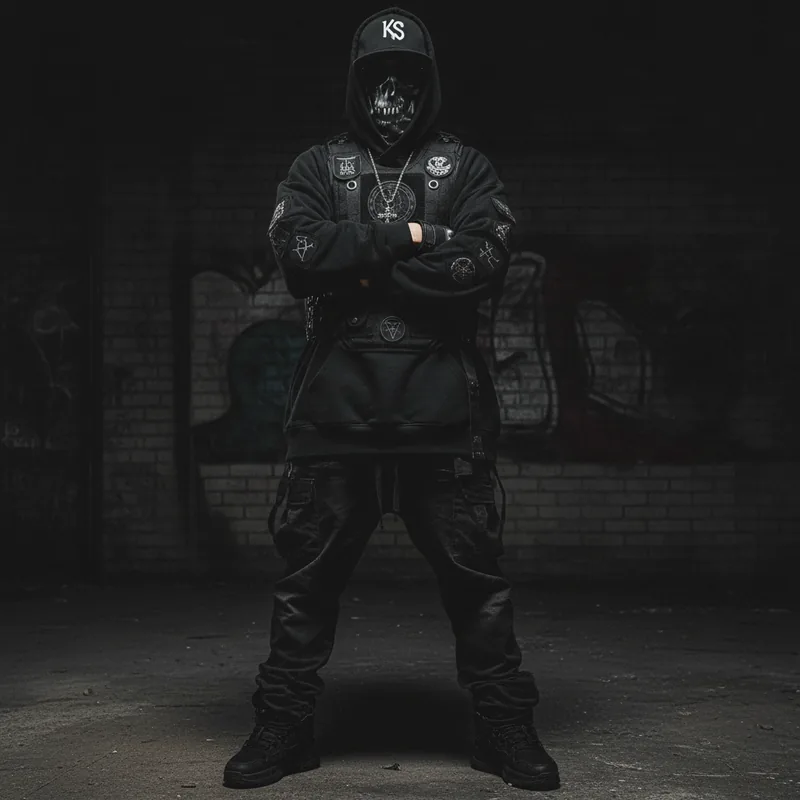
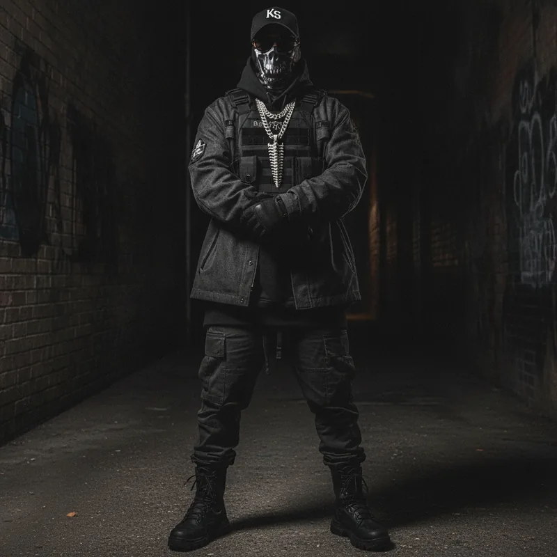

Profile
Kundalini Spines
From Seattle Housing Projects to Honolulu, Prophocie and Haight Built a World of Their Own

From Seattle Housing Projects to Honolulu, Prophocie and Haight Built a World of Their Own
There are rap groups that come together because somebody had an idea, and then there are groups that feel like they were always going to happen. Kundalini Spines belongs to the second category.
The two-man underground hip-hop outfit made up of Prophocie and Haight officially took shape in Honolulu, Hawaii, in 2025, but the story goes back much further than that. Before the masks, sacred geometry, spinal imagery and coded transmissions, there were two lifelong friends making music in Section 8 housing projects in Seattle, Washington.
Back then, they called themselves Blood Brother Phantoms. After recording a handful of songs under that name, the pair joined a larger group called NHAC — Nobody Had a Chance, where they continued writing, composing and creating music while developing the instincts that would eventually shape Kundalini Spines. Years later, both found themselves living in Honolulu, and what had started in Seattle resurfaced in a new form. The creative connection was still there, but the perspective had changed. There were more years behind them, more experiences to draw from and more ideas to say out loud.
That became Kundalini Spines.


Prophocie and Haight didn’t meet through a studio session, a producer or a mutual friend. They’ve known each other their entire lives. Music became another language inside a relationship that already existed, and that history gives the group a chemistry that would be difficult to manufacture.
Their roles are distinct without becoming separated. Haight handles the majority of the production, while both members contribute to the writing and larger creative identity of the project. Visually, neither is treated as the obvious frontman. Kundalini Spines often presents the pair as equal figures: hooded, masked, obscured behind sunglasses and surrounded by skeletal imagery, chains, armor and sacred geometry. The anonymity isn’t there simply to create mystery. It keeps the attention on the work and on the universe surrounding it.
The personalities are still present, but the mythology is bigger than either individual.
At its foundation, Kundalini Spines is unapologetically underground hip-hop. The production lives in the territory of heavy drums, dusty samples, deep bass, eerie piano, detuned bells, scratches, vinyl texture and deliberate empty space. The sound carries recognizable DNA from artists and producers such as Wu-Tang Clan, Mobb Deep, Killarmy, Jedi Mind Tricks, DJ Premier, The Alchemist, Daringer and Griselda, but the group isn’t interested in simply recreating another era.
Instead, Kundalini Spines takes the discipline of classic underground rap and pushes it into a stranger environment. The beats remain patient and give the verses room to breathe. Drums can disappear at just the right moment. Scratches become punctuation. Silence creates tension. The production is atmospheric without forgetting that the MC is still supposed to be at the center of the record.
That balance is important. Kundalini Spines might surround itself with occult imagery, spiritual concepts and cinematic visuals, but the music never loses its connection to the basic mechanics of hip-hop: hard drums, sharp writing and records designed to be replayed.

The writing follows the same philosophy. Kundalini Spines favors internal rhyme, multisyllabic patterns, layered wordplay and extended rhyme chains, with verses that often reveal more after repeated listens. Some lines are direct and brutal, while others are intentionally layered enough to force the listener to stop and unpack them.
Street language can collide with metaphysics in the same verse. Biblical references can sit beside science fiction. Sacred geometry shares space with surveillance, violence, ancient civilizations, dreams, technology, prophecy, mortality and hidden knowledge. The transitions rarely feel accidental because those subjects all belong to the same worldview.
That makes the group difficult to place inside one clean category. Calling Kundalini Spines spiritual rap doesn’t cover the aggression. Calling it horrorcore misses the philosophical side. Calling it conscious hip-hop ignores how grimy and confrontational the records can become, while labeling it boom-bap revivalism misses how much world-building exists beyond the beats.
Kundalini Spines lives somewhere in the overlap.
Underneath the imagery and symbolism, the philosophy of the group is actually straightforward. Kundalini Spines represents the search for truth and knowledge. Not the claim that every answer has already been discovered, but the belief that the search itself matters.
For Prophocie and Haight, the project is a creative outlet that has grown into something larger than either member individually. Years of experience, observation, reading, questioning and creating are folded into the music. The goal isn’t only to make records; it’s to keep searching, to share what they’ve learned and to put ideas into the world that might lead somebody else to look deeper.
The group doesn’t approach that mission like a lecture. Kundalini Spines rarely tells the listener exactly what to believe. Instead, it leaves clues, references and recurring symbols throughout the music and lets the audience decide how far they want to follow them.
The name itself carries much of the philosophy. The spine provides structure, keeps the body upright and serves as a highway for information between the brain and the rest of the body. Add kundalini, the idea of dormant energy rising upward, and the metaphor expands naturally into knowledge rising, awareness rising and the individual rising beyond where they started.
But Kundalini Spines deliberately avoids the polished New Age aesthetic often associated with those concepts. Their version is skeletal, industrial and sometimes violent. Spinal columns become machinery and circuitry. Vertebrae become chain links. Geometry intersects with bone. Seven nodes can suggest energy centers without resorting to obvious chakra imagery.
The sacred is dragged through the dirt.
That approach is central to the identity of the project because Kundalini Spines doesn’t treat awakening as something automatically peaceful. Knowledge can be uncomfortable. Transformation can hurt. Sometimes learning the truth means losing the version of reality you had before.
Those ideas converge on the group’s major body of work, Rise Up. Even the title functions on several levels: rising from circumstance, rising intellectually, rising spiritually, rising through the spine, rising against pressure or simply getting back up after life puts you on the ground.
The album moves through street narratives, paranoia, prophecy, ritual, violence, dreams, technology and metaphysical questions while remaining anchored in underground hip-hop. Tracks such as “Skeleton Key,” “Seven Chambers of Light,” “33rd Floor,” “The Great Work,” “Highly Unstable,” “Prophecy in Motion,” “Scorpion Dreams,” “Vision Quest,” “Dark Meta,” “Graveyard Shift,” “Spine Glow” and “May 26th” read less like a conventional track list and more like pieces of a larger coded system.
Individually, they’re songs. Together, they start to feel like coordinates.
That sense of connection is one of the defining features of Kundalini Spines. Symbols return. Ideas echo. References that seem isolated in one track can take on new meaning somewhere else. The project rewards listeners willing to stay with it long enough to notice the patterns.
The same ideas heard in the music extend into the visual identity. The spine appears constantly, alongside skeletons, keys, chambers, sacred geometry, Metatron’s Cube, tombstones, fire, armor, blue moonlight and decaying urban environments. None of those elements exist simply as decoration. They function as a visual language tied to the larger themes of knowledge, transformation, mortality and access.
One of the strongest recurring objects is the skeleton key. In the Kundalini Spines universe, the key can be built from vertebrae, bone and geometry, turning a familiar object into something that suggests secrecy, knowledge and hidden entryways. Like much of the group’s imagery, it raises a question without rushing to answer it.
What does the key open?
Kundalini Spines would rather let the listener decide.
There is a natural contrast between where this story began and where the current chapter was formed. The earliest music came out of Seattle housing projects, while Kundalini Spines officially emerged thousands of miles away in Honolulu. The move didn’t erase the original DNA; it gave the pair a different vantage point from which to look back at everything they had already lived through.
Blood Brother Phantoms represented the beginning. NHAC expanded the environment in which they created. Kundalini Spines is what happened after years of life, distance and accumulated experience were added to the same creative relationship.
The names changed, but the need to create never did.
By the time Prophocie and Haight came together again under the Kundalini Spines name in 2025, they weren’t simply returning to something old. They were building a new language for ideas that had been developing for years.
That may be the simplest way to understand Kundalini Spines. It is more than the sum of its parts.
Seattle and Honolulu. Blood Brother Phantoms and NHAC. Boom-bap and sacred geometry. Street experience and spiritual inquiry. Technology, mortality, paranoia, symbolism and knowledge all collide inside the same project. None of those elements alone defines the group. It is the tension between them that gives Kundalini Spines its identity.
For all the masks, symbolism and mythology surrounding the music, the foundation remains remarkably traditional: two lifelong friends, two MCs, hard drums and bars worth running back.
Prophocie and Haight started making music together in Seattle housing projects, continued creating through different eras of their lives and eventually found themselves together again in Honolulu with more experience, more questions and more to say.
They gave that new chapter a name.
Kundalini Spines.
Decode the transmission.
For collaboration, licensing, or press inquiries, reach out directly: